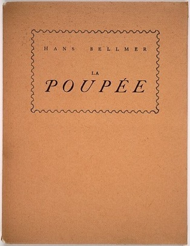
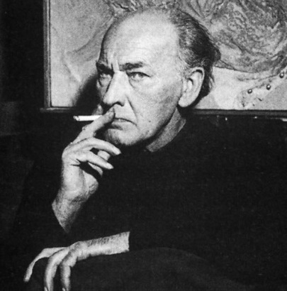

HANS BELLMER
Malarz, grafik, rzeźbiarz, fotograf i pisarz związany z kręgiem francuskiego surrealizmu. Urodzony 19 lutego 1902 roku w Katowicach, tu ukończył liceum (obecne Liceum im. Adama Mickiewicza) i odbyła się jego pierwsza wystawa w 1922 roku. Po krótkim okresie pracy w kopalni, pod naciskiem ojca, rozpoczyna studia w Technische Hochschule w Berlinie. Poznaje Otto Dixa i Georga Grosza, a w 1924 nawiązuje znajomość z surrealistami. W tym samym roku rezygnuje ze studiów i rozpoczyna pracę jako rysownik, typograf i ilustrator.
Hans Bellmer, Autoportret, gwasz, dekalkomania, 1942
Hans Bellmer Katowice 1902 - Paryż 1975

“I was aware of whay I caled phisical unconsciousness, the body’s underaying awareness of itself. I tried to rearrange the sexual elements of a girl’s body like a sort of plastic anagram. I remember describing it thus: the body is like a sequence that invites us to rearrange it, so that its real meaning comes clear through the series of endless anagrams. I want to reveal what is usually kept hidden - it is no game - I tried to open peoples eyes to new realities: it is as true of the dol photographs as it is of Petit Traite de la Morale. The anagram is the key to my work. This allies me to the Surrealists and I am glad to be considered part of that movement, although I have less concern than some Surrealists with the subconscious, because my works are carefuly thought out and controlled. If my work is found to scandalise, that is because for me the world is scandalous”
Hans Bellmer (in Conversation with Peter Webb)

W 1933 roku w proteście wobec nazistowskiego totalitaryzmu odsuwa się od działalności praktycznej i buduje swoją pierwszą Lalkę. W latach następnych często przebywa na Śląsku w domu letnim swoich rodziców w Bad Carlsruhe, czyli miejscowości Pokój, trzydzieści kilometrów od Opola. Tam trwają dalsze prace nad lalkami i stamtąd pochodzą dalsze fotografie przedstawiające Lalkę we wnętrzu domu i w ogrodzie. W roku 1937 jako artysta łączony z Entartete Kunst, po śmierci swej pierwszej żony, emigruje do Paryża.
Od publikacji jego dzieł w Minotaurze w 1936 roku należy do światowej czołówki surrealistów. W czasie wojny internowany wraz z Maxem Ernstem (z którym sie przyjaźnił) we Francji. W 1942 roku żeni się z Francuzką, z którą ma dwie córki. W 1944 ilustruje “Historię oka” G. Bataille’a. “Gry Lalki” – seria fotografii wraz z wierszami Eluarda zostaje opublikowany w 1949 roku. W 1953 poznaje pisarkę i artystkę Unicę Zurn, z którą pozostaje w związku aż do swej śmierci w 1970.
Przełomem w szerszej recepcji jego dzieł było otrzymanie prestiżowej nagrody William i Norma Foundation w 1958 roku. W 1972 odbyła się jego monogaficzna wystawa w Centre G. Pompidou. Od lat siedemdziesiątych w wielu krajach ukazują się liczne publikacje, książki i albumy poświęcone Hansowi Bellmerowi a jego prace mają poczese miejsce w największych muzeach świata.
